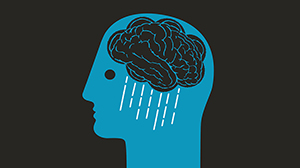
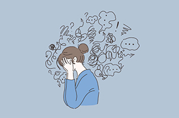
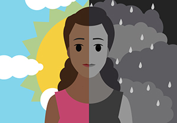

In a world where mental health is constantly under siege, we believe that improvement starts with yourself,because only then can we build ourselves up
Why we're doing this and a bit of information regarding mental health
The Importance of Mental Health
The importance of mental health is undeniable. It keeps us going, keeps us strong, and keeps us focused. If we're mentally health, we have the strength and motivation to keep going when this seem most difficult.
Our goal at Tranquillity Throughout
Tranquillity Throughout is a platform which helps the user with different mental issues through experience from others, advice from other users, and different methods of relaxation. The end user can find methods and techniques which suit them the best. People that suffer from mental health issues often get advice which will not work for them, but with this platform: the user is able to curate something which helps them rebuild themselves.
Our Community
The Tranquillity Throughout community tries to ensure that the users can provide advice or experience that could offer helpful insight into issues that other users could be suffering with. Although the end goal of what we want to achieve at Tranquillity Throughout is to ensure the user has their own support system, we want to ensure that the user has a community that they could fall on if need be.
Information Regarding Mental Health
Mental health includes our emotional, psychological, and social well-being. It affects how we think, feel, and act. It also helps determine how we handle stress, relate to others, and make choices. Mental health is important at every stage of life, from childhood and adolescence through adulthood.
Through our platform, we aim to give more insight into different forms of mental health but we want to focus on three main ones that commonly occur in day to day life.
Depression

Depression (major depressive disorder) is a common and serious medical illness that negatively affects how you feel, the way you think and how you act. Fortunately, it is also treatable. Depression causes feelings of sadness and/or a loss of interest in activities once enjoyed. It can lead to a variety of emotional and physical problems and can decrease a person’s ability to function at work and at home.
Depression symptoms can vary from mild to severe and can include:
Feeling sad or having a depressed mood
Loss of interest or pleasure in activities once enjoyed
Changes in appetite — weight loss or gain unrelated to dieting
Trouble sleeping or sleeping too much
Loss of energy or increased fatigue
Increase in purposeless physical activity (e.g., hand-wringing or pacing)
Feeling worthless or guilty
Difficulty thinking, concentrating or making decisions
Thoughts of death or suicide
Generalized Anxiety Disorder

Generalized anxiety disorder (GAD) is an anxiety disorder characterized by excessive, uncontrollable and often irrational worry about events or activities. This excessive worry often interferes with daily functioning, and sufferers are overly concerned about everyday matters such as health issues, money, death, family problems, friendship problems, interpersonal relationship problems, or work difficulties.
Anxiety symptoms can vary from mild to severe and can include:
Excessive worry
Restlessness
Trouble sleeping
Feeling tired
Irritability
Sweating
Trembling
Bipolar Disorder

Bipolar disorder (formerly called manic-depressive illness or manic depression) is a mental disorder that causes unusual shifts in mood, energy, activity levels, concentration, and the ability to carry out day-to-day tasks. There are three types of bipolar disorder. All three types involve clear changes in mood, energy, and activity levels.
Bipolar I Disorder
Defined by manic episodes that last at least 7 days, or by manic symptoms that are so severe that the person needs immediate hospital care. Usually, depressive episodes occur as well, typically lasting at least 2 weeks. Episodes of depression with mixed features (having depressive symptoms and manic symptoms at the same time) are also possible.
Bipolar II Disorder
Defined by a pattern of depressive episodes and hypomanic episodes, but not the full-blown manic episodes that are typical of Bipolar I Disorder.
Cyclothymic Disorder (also called Cyclothymia)
Defined by periods of hypomanic symptoms as well as periods of depressive symptoms lasting for at least 2 years (1 year in children and adolescents). However, the symptoms do not meet the diagnostic requirements for a hypomanic episode and a depressive episode.
If experiencing any of these symptoms for more than 2 weeks, it is advised to contact your general practitioner.